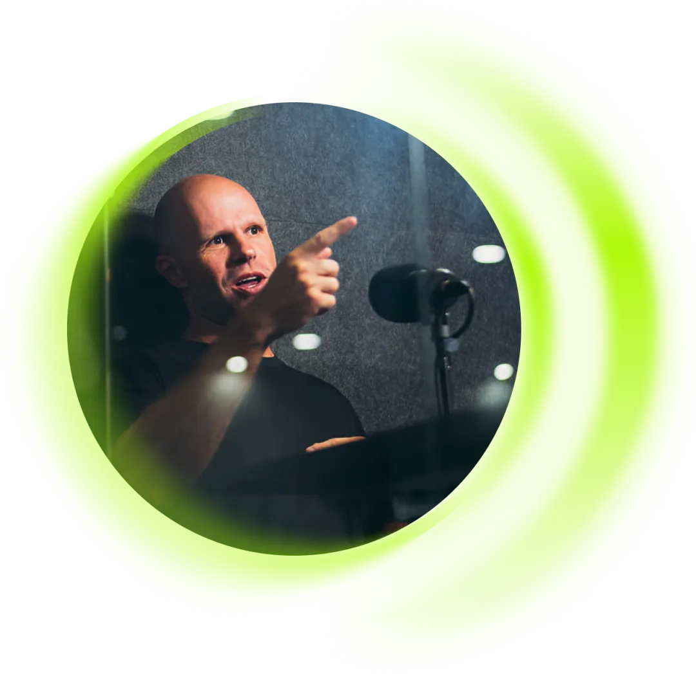

Volume sem profundidade
Cursos, eventos e grupos agregam, mas nem sempre trazem o tipo de conversa que move o ponteiro de quem já tem operação rodando.
Uma comunidade fechada de benchmarking ativo para donos, sócios e diretores de imobiliárias de médio e grande porte.
Quero me candidatar
Cursos, eventos e grupos agregam, mas nem sempre trazem o tipo de conversa que move o ponteiro de quem já tem operação rodando.
Ambientes misturados, onde níveis muito diferentes de maturidade operacional dividem o mesmo espaço. A conversa fica rasa porque o nível é excessivamente heterogêneo.
A maioria das comunidades atrai quem quer apenas observar ou colher informações sem contribuir. Aqui, o filtro existe exatamente para evitar isso.
A evolução de um líder sênior não pode se resumir ao consumo de conteúdo passivo. Vem de estar próximo dos nomes certos, nos bastidores certos, nas conversas certas.
“Menos gente falando. Mais gente que faz.”
O QUE É O INSIDER
A CUPOLA filtra o que entra, o que circula e quem tem acesso. Menos volume, mais relevância em cada troca.
Estar próximo dos nomes que movem o mercado tem valor estratégico. Aqui você não encontra, encontra pares.
Um ambiente fechado cria confiança para abrir a operação de verdade. Bastidor, sem vitrine.
O FILTRO QUE PROTEGE O AMBIENTE
Estar presente apenas para coletar informações não é troca. É extração. E é o oposto do que o Insider propõe.
O valor da comunidade cresce com a qualidade de quem contribui. Cada membro é selecionado também pelo que tem a oferecer ao grupo.
Cada candidatura é analisada. O critério é simples: você tem algo real a contribuir com quem está aqui?
PERFIL
O AMBIENTE
Antes de qualquer troca acontecer, a CUPOLA mapeia em profundidade a operação de cada membro: processos, indicadores, desafios e práticas que já funcionam. Com esse conhecimento, a CUPOLA identifica boas práticas, reconhece quem faz bem o quê e usa isso para tornar cada conexão dentro da comunidade precisa.
Não é benchmark genérico. A CUPOLA identifica qual membro tem a resposta que você precisa e facilita a conexão com contexto. Você não precisa garimpar. A curadoria está inclusa.
Um encontro periódico onde membros abrem a operação de verdade: o que funcionou, o que falhou, o que está sendo testado. Sem script corporativo, sem vitrine. O bastidor como principal ativo de aprendizado.
Sessões mensais focadas em desafios reais trazidos pelos membros, com facilitação da CUPOLA e participação ativa do grupo. Não é palestra. É resolução coletiva de problemas entre pares que já operam no mesmo nível de complexidade.
3 encontros por ano, com 2 dias de duração cada. Donos, sócios e CEOs têm acesso à operação de imobiliárias de referência no Brasil, processos, indicadores, decisões estratégicas e bastidores reais. No primeiro dia, o foco é conhecer a operação na prática. No segundo, um hotseat temático coloca em pauta dores, desafios e decisões importantes dos líderes presentes. Você volta para casa com referências concretas, não com anotações de uma apresentação.
Dois segmentos independentes. Você entra no que faz sentido para a sua operação.
As vagas são limitadas por design. A aplicação passa por análise da nossa equipe antes de qualquer avanço.
Fazer aplicação Seleção criteriosa - Resposta em até 3 dias úteisAs vagas são limitadas
POR QUE A CUPOLA
Educação que forma o pensamento. Consultoria que transforma a operação. Agência que executa com estratégia. Três frentes integradas, um único raciocínio.
Antes da transformação, vem a formação: de visão, de critério e de estratégia. A CUPOLA não está aqui para explicar o mercado. Está aqui para ajudar o mercado a pensar estrategicamente sobre si mesmo.
Tem imobiliária que trabalha muito e cresce devagar. Que gera lead todo dia e deixa dinheiro parado no CRM. O problema quase nunca é esforço. É a ausência do pensamento que dá sentido a ele. A CUPOLA existe para organizar o que está disperso e formar o raciocínio que transforma operação em crescimento real.